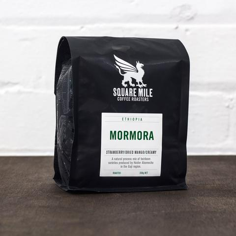
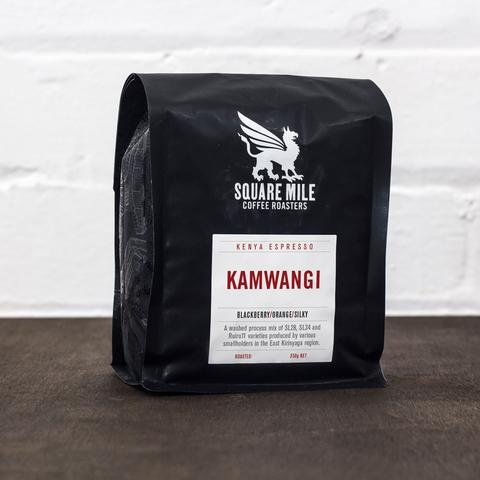
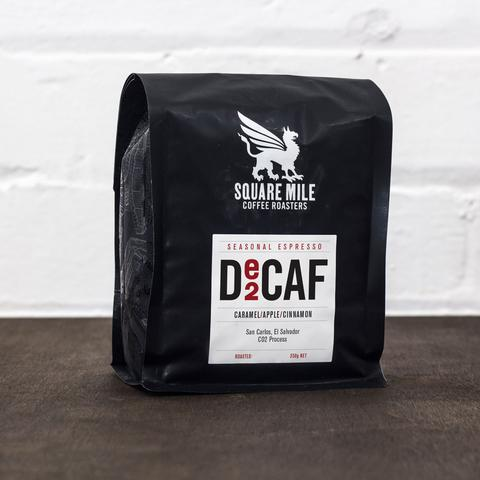

Coffee
Quejina (Guatemala)
redcurrant/honeysuckle/juicy
Fruity redcurrant and sweet honeysuckle flavours. An incredibly juicy coffee which we struggled to decide on the right berry descriptor, but raspberry, blackberry and blueberry were also in the running!
Mormora (Ethiopia)
blackberry/orange/silky
Fruity, sweet notes of dried mango, strawberry and passionfruit sit alongside a delicious creamy mouthfeel making this a tasty summer Ethiopian, hot or cold.
Kamwangi (Kenya)
redcurrant/honeysuckle/juicy
This is one fruit filled espresso! From citrus fruits, such as orange, grapefruit and clementine, to berries of the black, blue and red variety, this is fruit turned up to 11, all wrapped up in a silky smooth body.
Decaf Espresso (El Salvador)
caramel/apple/cinnamon
This is a single origin espresso from San Carlos in El Salvador, think sweet caramel and apple notes alongside sprinklings of cinnamon in the finish.